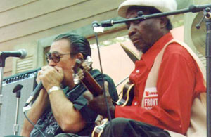

Charlie Musselwhite - музыкант символизирующий прошлое, настоящее и, дай Бог ему здоровья, будущее блюза (прежде всего гармошечного, хотя он еще и мастер традиционной игры на гитаре).
Официальный сайт: www.charlie-musselwhite.com
Родился в штате Миссисипи в 1944 г., позже перебрался на север в поисках работы, где воочию познакомился с творчеством грандов блюзовой губной гармоники: Little Walter, Carey Bell, Big Walter Horton, Sonny Boy Williamson. Благодаря общительности, таланту, виртуозной технике исполнения быстро вливается в блюзовое сообщество, благодаря чему, получает возможность не только играть рядом с великими, но и даже принимает участие в записи альбома самого Big Walter Horton.
Дебютная пластинка, выпущенная на Vanguard'e - “Stand Back! Here Comes Charley Musselwhite's South Side Band вместе с альбомами шестидесятых Баттерфилда и Хаммонда становится классикой блюз-рока. Хотя следует отметить, что Чарли, как мне кажеться, более привержен традициооной блюзовой форме, чем Баттерфилд. Успех альбому обеспечивают интересный, не избитый подбор материала, виртуозная игра музыкантов (Harvey Mandel, Barry Goldberg не нуждаются в представлении) и конечно же, высокая репутация Масселвайта как музыканта, а ведь ему всего 22 года!
В семидесятых Чарли сам становится учителем и наставником, другом для следующего поколения блюзовых музыкантов - Robben Ford, Kim Wilson.
Восмидесятые - начало девяностых в творческом плане становятся для Чарли очень удачным временем. Проблемы с алкогольной зависимостью, плотный гастрольный график оставляют почти пятилетнюю брешь в дискографии музыканта, но в конце девяностых завязавший с алкоголем, но не завязавший с блюзом Масселвайт продолжает выпускать альбомы, которые опять благодаря великолепному музыкальному вкусу, виртуозной игре, смешению различных жанров звучат свежо, актуально и интересно.

В новом веке Чарли на гребне волны, выпускает альбомы, много гастролирует и продолжает быть хорошим человеком.
P.S. Крайне рекомендую для посещения именной сайт Масселвайта www.charlie-musselwhite.com, на котором особое внимание уделите фото галерее, (как я уже говорил, Чарли очень общительный и хороший человек, что подтверждает огромное количество фотографий, на которых он в компании своих друзей - блюзовая тусовка знаменитостей - от Muddy Waters, Big Walter Horton, John Lee Hooker, Willie Dixon до Kim Wilson, Ronnie Earl, William Clarke и других более молодых музыкантов, а также знаменитых киноактеров Bruce Willis (см. фото), Demi Moore, Jim Belushi). Также на сайте имеется раздел, на котором можно задать любой вопрос Чарли: жизнь, музыка, гармошка, женщины, он на них с удовольствием ответит!
Константин Колесниченко [aka Wheel]
bluesharp.inkharkov.com